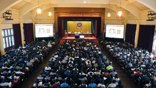
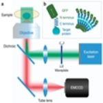

2016年北京大学秋季运动会暨新生趣味运动会成功举行

北京高校思想政治理论课建设专题会暨“名家领读经典”活动启动仪式在北大举行
9月29日上午，“名家领读经典”活动启动仪式在北大办公楼礼堂举行，北京市委副书记、教育工委书记苟仲文讲话并为授课专家颁发聘书。

工学院席鹏课题组为超分辨显微引入全新维度
最近，工学院席鹏课题组提出了一种新的基于偏振偶极子方位角的超分辨技术，不仅为超分辨提供了一种全新的维度，而且为该领域近期的一个热点争论提供了解答。
- 新华网
- 习近平在纪念红军长征胜利80周年大会上发表重要讲话
- 光明日报
- 林建华：创业教育没有围墙
- 10-24 . 2016|关于举办北京大学第29期党的知识培训班的通知
- 10-24 . 2016|2016北京大学“大学堂”讲学计划：丹・席勒
- 10-24 . 2016|2016年11月3日校领导接待日安排通知
专题网站
“两学一做”学习教育
北京大学实施综和改革
北大本科教学评估网
名师大讲堂
北京大学学术成果生态系统
信息公开
党代表热线
校园地图
未命名BSS
慕课
校内门户
网络服务
相关链接


- 版权所有@北京大学|
- 地址：北京市海淀区颐和园路5号|
- 邮编：100871|
- 邮箱：webmaster@pku.edu.cn|
- 京ICP备05065075号-1|
- 京公网安备 110402430047 号